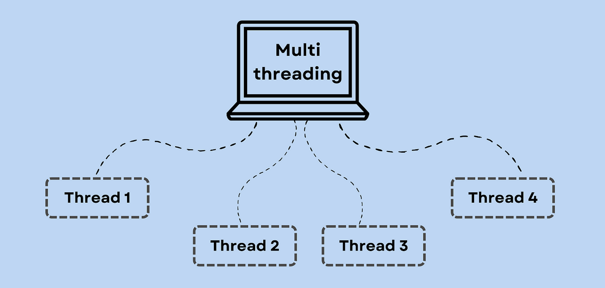

C++ 多线程
线程是程序中的轻量级执行单元，允许程序同时执行多个任务。
多线程是多任务处理的一种特殊形式，多任务处理允许让电脑同时运行两个或两个以上的程序。
一般情况下，两种类型的多任务处理：基于进程和基于线程。
- 基于进程的多任务处理是程序的并发执行。
- 基于线程的多任务处理是同一程序的片段的并发执行。

C++ 多线程编程涉及在一个程序中创建和管理多个并发执行的线程。
C++ 提供了强大的多线程支持，特别是在 C++11 标准及其之后，通过 <thread> 标准库使得多线程编程变得更加简单和安全。
概念说明
线程 (Thread)
- 线程是程序执行中的单一顺序控制流，多个线程可以在同一个进程中独立运行。
- 线程共享进程的地址空间、文件描述符、堆和全局变量等资源，但每个线程有自己的栈、寄存器和程序计数器。
并发 (Concurrency) 与并行 (Parallelism)
- 并发：多个任务在时间片段内交替执行，表现出同时进行的效果。
- 并行：多个任务在多个处理器或处理器核上同时执行。
C++11 及以后的标准提供了多线程支持，核心组件包括：
std::thread：用于创建和管理线程。std::mutex：用于线程之间的互斥，防止多个线程同时访问共享资源。std::lock_guard和std::unique_lock：用于管理锁的获取和释放。std::condition_variable：用于线程间的条件变量，协调线程间的等待和通知。std::future和std::promise：用于实现线程间的值传递和任务同步。
创建线程
C++ 11 之后添加了新的标准线程库 std::thread，std::thread 在 <thread> 头文件中声明，因此使用 std::thread 时需要包含 在 <thread> 头文件。
注意：之前一些编译器使用 C++ 11 的编译参数是 -std=c++11:
g++ -std=c++11 test.cppstd::thread
#include<thread> std::thread thread_object(callable, args...);
callable：可调用对象，可以是函数指针、函数对象、Lambda 表达式等。args...：传递给callable的参数列表。
使用函数指针
通过函数指针创建线程，这是最基本的方式：
#include <iostream>
#include <thread>
void printMessage(int count) {
for (int i = 0; i < count; ++i) {
std::cout << "Hello from thread (function pointer)!\n";
}
}
int main() {
std::thread t1(printMessage, 5); // 创建线程，传递函数指针和参数
t1.join(); // 等待线程完成
return 0;
}
使用 g++ -std=c++11 编译后，执行输出结果为：
Hello from thread (function pointer)!
Hello from thread (function pointer)!
Hello from thread (function pointer)!
Hello from thread (function pointer)!
Hello from thread (function pointer)!使用函数对象
通过类中的 operator() 方法定义函数对象来创建线程：
#include <iostream>
#include <thread>
class PrintTask {
public:
void operator()(int count) const {
for (int i = 0; i < count; ++i) {
std::cout << "Hello from thread (function object)!\n";
}
}
};
int main() {
std::thread t2(PrintTask(), 5); // 创建线程，传递函数对象和参数
t2.join(); // 等待线程完成
return 0;
}
使用 g++ -std=c++11 编译后，执行输出结果为：
Hello from thread (function object)!
Hello from thread (function object)!
Hello from thread (function object)!
Hello from thread (function object)!
Hello from thread (function object)!使用 Lambda 表达式
Lambda 表达式可以直接内联定义线程执行的代码：
#include <iostream>
#include <thread>
int main() {
std::thread t3([](int count) {
for (int i = 0; i < count; ++i) {
std::cout << "Hello from thread (lambda)!\n";
}
}, 5); // 创建线程，传递 Lambda 表达式和参数
t3.join(); // 等待线程完成
return 0;
}
使用 g++ -std=c++11 编译后，执行输出结果为：
Hello from thread (lambda)!
Hello from thread (lambda)!
Hello from thread (lambda)!
Hello from thread (lambda)!
Hello from thread (lambda)!线程管理
join()
join() 用于等待线程完成执行。如果不调用 join() 或 detach() 而直接销毁线程对象，会导致程序崩溃。
t.join();detach()
detach() 将线程与主线程分离，线程在后台独立运行，主线程不再等待它。
t.detach();线程的传参
值传递
参数可以通过值传递给线程：
std::thread t(func, arg1, arg2);引用传递
如果需要传递引用参数，需要使用 std::ref：
#include <iostream>
#include <thread>
void increment(int& x) {
++x;
}
int main() {
int num = 0;
std::thread t(increment, std::ref(num)); // 使用 std::ref 传递引用
t.join();
std::cout << "Value after increment: " << num << std::endl;
return 0;
}
综合实例
以下是一个完整的示例，展示了如何使用上述三种方式创建线程，并进行线程管理。
#include <iostream>
#include <thread>
using namespace std;
// 一个简单的函数，作为线程的入口函数
void foo(int Z) {
for (int i = 0; i < Z; i++) {
cout << "线程使用函数指针作为可调用参数\n";
}
}
// 可调用对象的类定义
class ThreadObj {
public:
void operator()(int x) const {
for (int i = 0; i < x; i++) {
cout << "线程使用函数对象作为可调用参数\n";
}
}
};
int main() {
cout << "线程 1 、2 、3 独立运行" << endl;
// 使用函数指针创建线程
thread th1(foo, 3);
// 使用函数对象创建线程
thread th2(ThreadObj(), 3);
// 使用 Lambda 表达式创建线程
thread th3([](int x) {
for (int i = 0; i < x; i++) {
cout << "线程使用 lambda 表达式作为可调用参数\n";
}
}, 3);
// 等待所有线程完成
th1.join(); // 等待线程 th1 完成
th2.join(); // 等待线程 th2 完成
th3.join(); // 等待线程 th3 完成
return 0;
}
使用 C++ 11 的编译参数 -std=c++11:
g++ -std=c++11 test.cpp以上代码的输出结果在不同平台或每次运行时可能不同，因为线程的执行顺序由操作系统的调度算法决定，多个线程会并发运行，输出可能交错，例如：
线程 1 、2 、3 独立运行
线程使用函数指针作为可调用参数
线程使用函数对象作为可调用参数
线程使用 lambda 表达式作为可调用参数
线程使用函数指针作为可调用参数
...线程同步与互斥
在多线程编程中，线程同步与互斥是两个非常重要的概念，它们用于控制多个线程对共享资源的访问，以避免数据竞争、死锁等问题。
1. 互斥量（Mutex）
互斥量是一种同步原语，用于防止多个线程同时访问共享资源。当一个线程需要访问共享资源时，它首先需要锁定（lock）互斥量。如果互斥量已经被其他线程锁定，那么请求锁定的线程将被阻塞，直到互斥量被解锁（unlock）。
std::mutex：用于保护共享资源，防止数据竞争。
std::mutex mtx;
mtx.lock(); // 锁定互斥锁
// 访问共享资源
mtx.unlock(); // 释放互斥锁std::lock_guard 和 std::unique_lock：自动管理锁的获取和释放。
std::lock_guard<std::mutex> lock(mtx); // 自动锁定和解锁 // 访问共享资源
互斥量的使用示例：
#include <mutex>
std::mutex mtx; // 全局互斥量
void safeFunction() {
mtx.lock(); // 请求锁定互斥量
// 访问或修改共享资源
mtx.unlock(); // 释放互斥量
}
int main() {
std::thread t1(safeFunction);
std::thread t2(safeFunction);
t1.join();
t2.join();
return 0;
}
2. 锁（Locks）
C++提供了多种锁类型，用于简化互斥量的使用和管理。
常见的锁类型包括：
- std::lock_guard：作用域锁，当构造时自动锁定互斥量，当析构时自动解锁。
- std::unique_lock：与std::lock_guard类似，但提供了更多的灵活性，例如可以转移所有权和手动解锁。
锁的使用示例：
#include <mutex>
std::mutex mtx;
void safeFunctionWithLockGuard() {
std::lock_guard<std::mutex> lk(mtx);
// 访问或修改共享资源
}
void safeFunctionWithUniqueLock() {
std::unique_lock<std::mutex> ul(mtx);
// 访问或修改共享资源
// ul.unlock(); // 可选：手动解锁
// ...
}
3. 条件变量（Condition Variable）
条件变量用于线程间的协调，允许一个或多个线程等待某个条件的发生。它通常与互斥量一起使用，以实现线程间的同步。
std::condition_variable用于实现线程间的等待和通知机制。
std::condition_variable cv; std::mutex mtx; bool ready = false; std::unique_lock<std::mutex> lock(mtx); cv.wait(lock, []{ return ready; }); // 等待条件满足 // 条件满足后执行
条件变量的使用示例：
#include <mutex>
#include <condition_variable>
std::mutex mtx;
std::condition_variable cv;
bool ready = false;
void workerThread() {
std::unique_lock<std::mutex> lk(mtx);
cv.wait(lk, []{ return ready; }); // 等待条件
// 当条件满足时执行工作
}
void mainThread() {
{
std::lock_guard<std::mutex> lk(mtx);
// 准备数据
ready = true;
} // 离开作用域时解锁
cv.notify_one(); // 通知一个等待的线程
}
4. 原子操作（Atomic Operations）
原子操作确保对共享数据的访问是不可分割的，即在多线程环境下，原子操作要么完全执行，要么完全不执行，不会出现中间状态。
原子操作的使用示例：
#include <atomic>
#include <thread>
std::atomic<int> count(0);
void increment() {
count.fetch_add(1, std::memory_order_relaxed);
}
int main() {
std::thread t1(increment);
std::thread t2(increment);
t1.join();
t2.join();
return count; // 应返回2
}
5. 线程局部存储（Thread Local Storage, TLS）
线程局部存储允许每个线程拥有自己的数据副本。这可以通过thread_local关键字实现，避免了对共享资源的争用。
线程局部存储的使用示例：
#include <iostream>
#include <thread>
thread_local int threadData = 0;
void threadFunction() {
threadData = 42; // 每个线程都有自己的threadData副本
std::cout << "Thread data: " << threadData << std::endl;
}
int main() {
std::thread t1(threadFunction);
std::thread t2(threadFunction);
t1.join();
t2.join();
return 0;
}
6. 死锁（Deadlock）和避免策略
死锁发生在多个线程互相等待对方释放资源，但没有一个线程能够继续执行。避免死锁的策略包括：
- 总是以相同的顺序请求资源。
- 使用超时来尝试获取资源。
- 使用死锁检测算法。
线程间通信
std::future 和 std::promise：实现线程间的值传递。
std::promise<int> p;
std::future<int> f = p.get_future();
std::thread t([&p] {
p.set_value(10); // 设置值，触发 future
});
int result = f.get(); // 获取值
消息队列（基于 std::queue 和 std::mutex）实现简单的线程间通信。
C++17 引入了并行算法库（<algorithm>），其中部分算法支持并行执行，可以利用多核 CPU 提高性能。
#include <algorithm>
#include <vector>
#include <execution>
std::vector<int> vec = {1, 2, 3, 4, 5};
std::for_each(std::execution::par, vec.begin(), vec.end(), [](int &n) {
n *= 2;
});
C++ 标准库中的并行算法
更多实例参考：
C++ 多线程: http://www.runoob.com/w3cnote/cpp-multithread-demo.html
C++ std::thread: https://www.runoob.com/w3cnote/cpp-std-thread.html